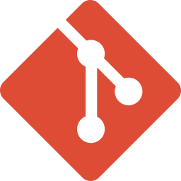
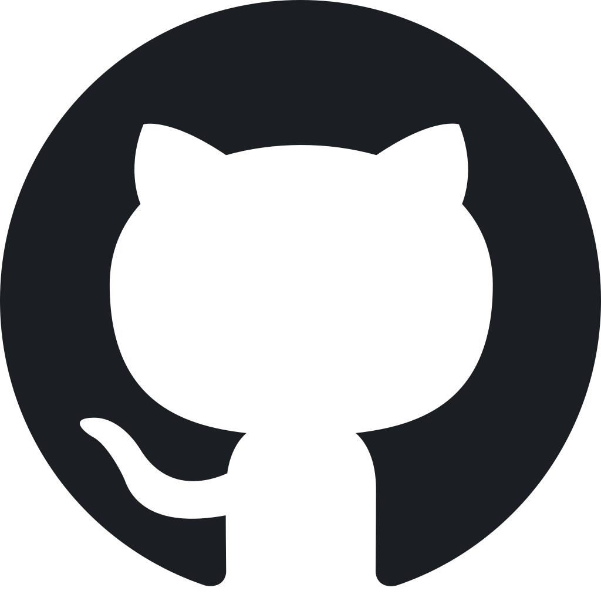
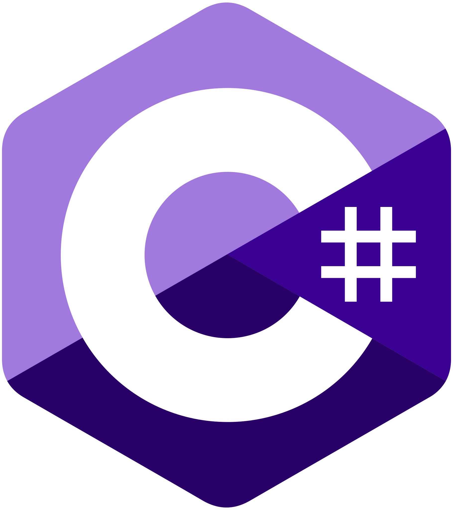
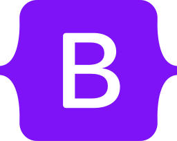

Sobre Mí
Hola soy Cristian, graduado de Ingeniero en informática en el Instituto Tecnológico Superior de la Región de los Llanos. Durante la etapa universitaria realice mis prácticas profesionales al desarrollar el Sistema Electrónico de Consultas y Concentrado de Información Médica en el H. R. N° 26 IMMS Prospera. Y Cuento con +5 años de experiencia en el desarrollo Full-Stack en: - Crear y optimizar las interfaces del lado del cliente para mejorar la experiencia del usuario. - Desarrollar y mantener la lógica del lado servidor y las bases de datos. - Manejar y optimizar bases de datos para garantizar un almacenamiento y recuperación eficientes de datos. - Asegurar que los componentes del frontend y backend trabajen armónicamente. - Realizar pruebas para garantizar la funcionalidad, seguridad y eficiencia del software. Tengo un gusto por aprender e investigar nuevas tecnologías para mejorar mis habilidades y así dar soluciones a problemas que se presenten, con la finalidad de cumplir los objetivos establecidos y automatizar procesos de una organización.
Mis Habilidades



